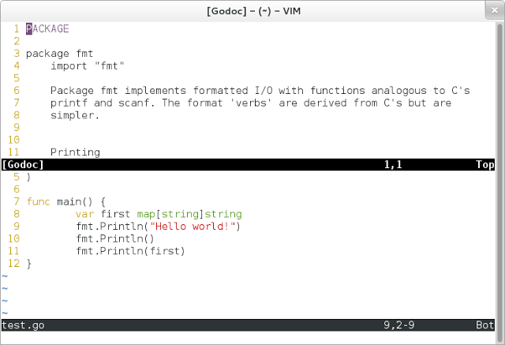
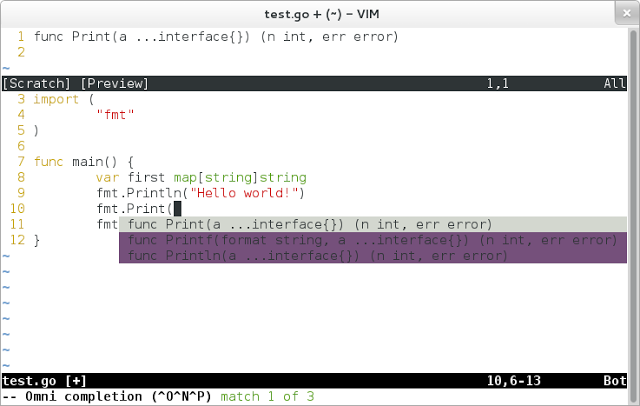

2013-01-09 (Updated: 2013-01-28)
I grew up on Emacs and Bash. I love them dearly (I have the pinky fingers to prove it). I’m not so blinded by my faith in them though that I won’t occasionally try new things. I’ve heard a lot of good things about Zsh and I’ve found myself connecting to many a servers that have Vim installed but not Emacs. So, I thought I’d give them a try.
Of course, my new pet programming language is Go, so I thought I’d try and get some basic functionality for Go working with Vim. I’m pleased to say the process was rather simple, but some of the documentation I found online was somewhat outdated (the readmes were up to date but hard to find). I thought I’d share what I did, if nothing else so I can remember if I ever have to do it again.
First, if you are like me and don’t have Vim installed on your system, you should get that setup. On Arch Linux, you can:
sudo pacman -S gvim
This will install the GUI version of Vim as well as the console version. Next, you’ll want to update your ~/.vimrc file to use Go’s Vim tools. They come standard with the installation, you just need to setup Vim to use them. Append the following to your ~/.vimrc file:
set rtp+=$GOROOT/misc/vim
filetype plugin indent on
syntax on
You’ll want to replace $GOROOT with the path to Go’s share items (in Arch Linux, it is /usr/share/go). This will give you fairly useful features like syntax highlighting proper indentation, and documentation.

I was also interested in auto-completion as I use it quite often in Emacs. Fortunately, Gocode provides functionality for vim as well. Setting it up was simple. If you haven’t used Gocode before, you’ll need to install it’s daemon:
go get -u github.com/nsf/gocode
If you don’t have your $GOPATH*s bin folder in your path, you’ll need to add that. My *.zshrc file has these lines that do just that:
export GOPATH="${HOME}/go"
export GOBIN="${GOPATH}/bin"
export PATH="${PATH}:${GOBIN}"
With those steps completed, run the setup script provided:
cd $GOPATH/src/github.com/nsf/gocode/vim
./update.bash
Finally, append the following to your ~/.vimrc:
filetype plugin on
Now, when you are typing a command and aren’t quite sure what should come next or want to see what the function parameters are, simply use <C-x><C-o> and Gocode will give you a list of possibly completion commands. If you install packages, it will even auto-complete from those (assuming they are in your $GOPATH/pkg directory).

So far, I have been impressed with how Vim and Go interact. It was fairly simple to setup considering I haven’t ever used Vim except for the most basic viewing and editing. I’m not ready to leave Emacs just yet, but Vim and Go have certainly been fun and I’ll keep at it for a while to see how close I can get to my keyboard-fu with Emacs.
If you have other cool things you are doing with Vim and Go that you think would impress me, let me know! I’m still new to Vim, so I’d love any feedback.